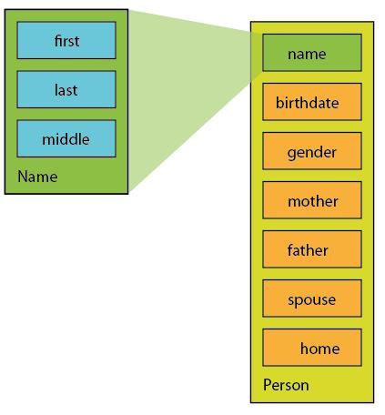
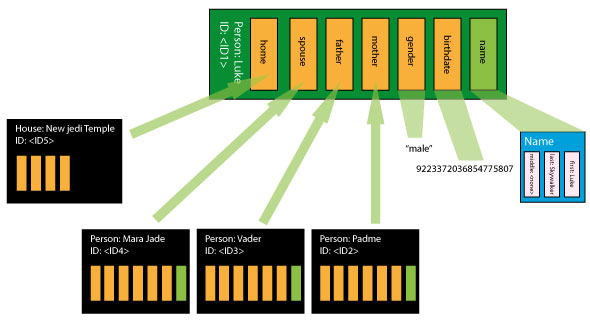

About this Example
This QDM represents information about people and the houses they own. Basic Information Structure provides a model of the information we wish to represent. People QDM and House QDM provide the complete QDM code. The other topics highlight aspects and techniques used in these QDMs.
Basic Information Structure
Let us consider the following data structure:
For any individual, we represent the following information in a people data type:
- Name: consisting of first name, middle name and last name
- Date of birth
- Gender
- Mother
- Father
- Spouse
- Their home
- The houses they own
For the house, we represent the following information in a house data type:
- Address: consisting of the street, the city, the zipcode, the state and the country
- Owner
People QDM
Below is the QDM representing the people information we want to exchange:
<?xml version="1.0"?>
<types xmlns="http://www.qeo.org/formal/2013/Qeo_Data_Model" version="0.1">
<include file="qeo_types.xml"/>
<module name="org::qeo::sample::people">
<struct name="Name">
<member name="first" type="string" />
<member name="middle" type="string" sequenceMaxLength="-1" />
<member name="last" type="string" />
</struct>
<struct behavior="state" name="Person">
<member name="id" key="true" type="nonBasic" nonBasicTypeName="org::qeo::UUID">
<doc>A person's unique ID.</doc>
</member>
<member name="name" type="nonBasic" nonBasicTypeName="Name" />
<member name="birthDate" type="int64" />
<member name="gender" type="string" />
<member name="mother" type="nonBasic" nonBasicTypeName="org::qeo::UUID" />
<member name="father" type="nonBasic" nonBasicTypeName="org::qeo::UUID" />
<member name="spouse" type="nonBasic" nonBasicTypeName="org::qeo::UUID" />
<member name="home" type="nonBasic" nonBasicTypeName="org::qeo::UUID" />
<member name="ownedHouses" type="nonBasic" nonBasicTypeName="org::qeo::UUID" sequenceMaxLength="-1" />
</struct>
</module>
</types>
House QDM
Below is the QDM for a house:
<?xml version="1.0"?>
<types xmlns="http://www.qeo.org/formal/2013/Qeo_Data_Model" version="0.1">
<include file="qeo_types.xml"/>
<module name="org::qeo::sample::housing">
<struct name="Address">
<member name="street" type="string" />
<member name="city" type="string" />
<member name="zipcode" type="string" />
<member name="state" type="string" />
<member name="country" type="string" />
</struct>
<struct behavior="state" name="House">
<member name="id" key="true" type="nonBasic" nonBasicTypeName="org::qeo::UUID">
<doc>A house's unique ID.</doc>
</member>
<member name="address" type="nonBasic" nonBasicTypeName="Address" />
<member name="owners" type="nonBasic" nonBasicTypeName="org::qeo::UUID" sequenceMaxLength="-1" />
</struct>
</module>
</types>
Defining Auxiliary Structs and Using them in Member Declarations
IN THE PEOPLE DATA MODEL
The people data model shows how we can define and use a struct (without behaviour) as a member in another struct. In it, there are two structs:
- Person: the major struct
- Name: a supporting struct, which is used as a member in Person.
This is shown in the diagram below:

STEP 1: DEFINE THE STRUCT
First, we define the Name struct:
<struct name="Name">
<member name="first" type="string" />
<member name="middle" type="string" sequenceMaxLength="-1" />
<member name="last" type="string" />
</struct>
STEP 2: USE IT AS MEMBER
Then we use it as a member type for the Person struct:
<member name="name" type="nonBasic" nonBasicTypeName="Name" />
IN THE HOUSE DATA MODEL
Similarly to the case described above, the House struct uses the Address struct as a member type. This struct is defined as follows:
<struct name="Address"> <member name="street" type="string" /> <member name="city" type="string" /> <member name="zipcode" type="string" /> <member name="state" type="string" /> <member name="country" type="string" /> </struct>
The House struct then uses this struct as a member:
<member name="address" type="nonBasic" nonBasicTypeName="Address" />
Defining Key Members
We need to be able to clearly identify instances of a data type. We therefore use one of its members as a key member. An instance can be clearly defined by the value of its key member. Only main structs require a key. Auxiliary members used as member types do not require a key. In order to declare a member as key, we provide it with the key="true" attribute. In the house and person QDMs, id is a key member:
<member name="id" key="true" type="nonBasic" nonBasicTypeName="org::qeo::UUID">
Referencing Structs as Members
Consider our example. In the Person struct, mother, father, and spouse are members of the people type, and ownedHouses is of the housing type. These members do not contain the actual data type instances, but rather contain a reference to them. In order to make this work, we need to:
- Make sure that the type of the referencing member and the type of the key member to which we are referencing are the same.
- Include the data model that defines the data type to which we are referencing in the data type we are referencing from.
STEP 1: DEFINE THE REFERENCING MEMBER
In the example, we followed the practice of using UUID as id member type of the Person and House struct.
<member name="id" key="true" type="nonBasic" nonBasicTypeName="org::qeo::UUID">
All referencing members are therefore declared as UUID type as well:
<...> <member name="mother" type="nonBasic" nonBasicTypeName="org::qeo::UUID" /> <member name="father" type="nonBasic" nonBasicTypeName="org::qeo::UUID" /> <member name="spouse" type="nonBasic" nonBasicTypeName="org::qeo::UUID" /> <member name="home" type="nonBasic" nonBasicTypeName="org::qeo::UUID" /> <member name="ownedHouses" type="nonBasic" nonBasicTypeName="org::qeo::UUID" sequenceMaxLength="-1" /> <...> <member name="owners" type="nonBasic" nonBasicTypeName="org::qeo::UUID" sequenceMaxLength="-1" /> <...>
STEP 2: INCLUDE THE REFERENCED MODEL
To include the referenced data models, we use the include statement:
<...> <include file="housing.xml" /> <...> <include file="people.xml" /> <...>
EXAMPLE
The diagram below shows an example of how several instances of the data types can be linked through referencing:

Using Predefined Data Models
In the same way we can use predefined structs inside of other structs, we can use predefined, standard data models. This adds a degree of standardization to your Data Models. Even though such a library does not yet exist, it is the intention of the Qeo programme to provide it.
Both people and house use UUID, a struct defined in the Qeo library, defined in the qeo_types.xml file.
<struct name="UUID">
<doc>The Qeo UUID type.</doc>
<member name="upper" type="int64" />
<member name="lower" type="int64" />
</struct>
In order to incorporate this struct into our QDM, we use the include statement:
<include file="qeo_types.xml"/>
{kind=link}
{kind=link}